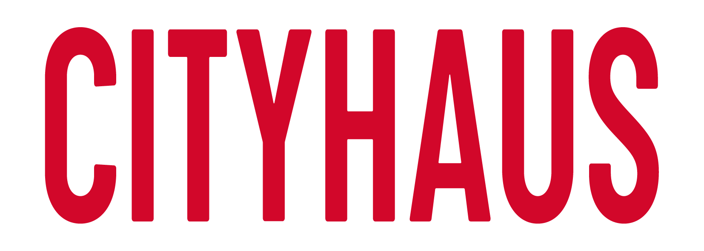

Home
Ausstellungen
Künstler
Presse
Über uns
Kontakt

Galerie - Weinfelden
Presse
Claudia Eugster: Pflanzenkunde im Cityhaus
Erna Hürzeler — Tagblatt, 30. Oktober 2025
Monika Wick: Ihre Herzen schlagen für die Kunst
Erna Hürzeler — Weinfelder Anzeiger, 29. Oktober 2025
Rolf Hürzeler: Der Meister der totalen Reduktion
Arturo Di Maria — Tagblatt, 08. März 2025
Mario Testa: Ausstellung im Cityhaus
Arturo Di Maria — Weinfelder Anzeiger, Februar 2025